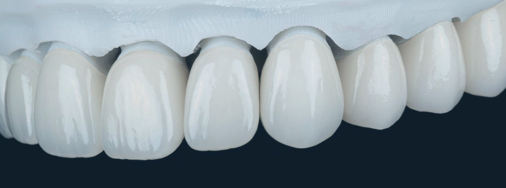
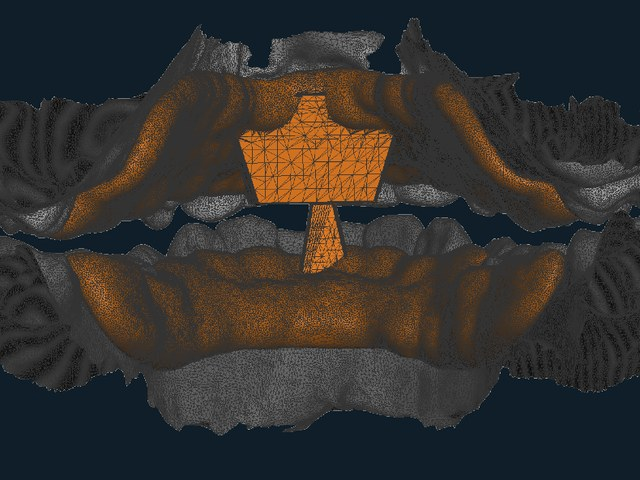

Riabilitazione full-mouth
Dentatura usurata e variazioni della DVO, pianificate come un'unica occlusione.
Voi inviate la scansione o il vostro progetto. Noi progettiamo, fresiamo, caratterizziamo e glasiamo, e vi rimandiamo il restauro finito con il vostro nome.

Prezzi netti in euro, IVA e oneri di importazione esclusi. Spedizione a prezzo di costo.
Prodotto in Cina. Il lavoro resta a vostro nome e i vostri dentisti restano vostri.

Zirconia monolitica, progettata dal nostro team o realizzata dal vostro progetto.

Zirconia caratterizzata individualmente, disilicato di litio e IPS e.max.

Zirconia su Ti-base, avvitate o cementate.

Bite di stabilizzazione Michigan, bite di riposizionamento e deprogrammatori anteriori, realizzati sul morso o sulla posizione mandibolare prescritta.
Prima pianificati con voi, poi progettati e realizzati dallo stesso team.
Preventivo per caso.
Dentatura usurata e variazioni della DVO, pianificate come un'unica occlusione.

Dalla guida e dal provvisorio alla protesi definitiva.

Pianificazione basata sull'imaging per riabilitazioni che coinvolgono l'ATM.
Scopri AxisGuideLa scansione o il vostro progetto, con materiale, colore e data di consegna, via e-mail o WhatsApp.
Potete controllare il progetto prima della fresatura. La produzione richiede 5–7 giorni lavorativi.
Il restauro finito viene spedito al vostro laboratorio tramite corriere.
Inviate un caso e giudicate il risultato sul vostro banco.
Progettazione, fresatura, caratterizzazione e glasatura. Ti-base, spedizione, dazi e tasse sono indicati a parte nel preventivo.
Sono prodotti in Cina. Il restauro esce con il nome del vostro laboratorio.
Sì. La sola progettazione (METALAB) è disponibile su richiesta.